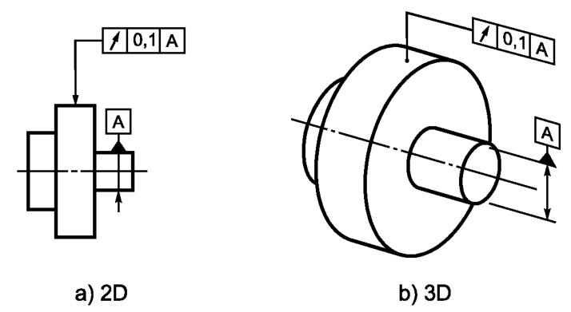
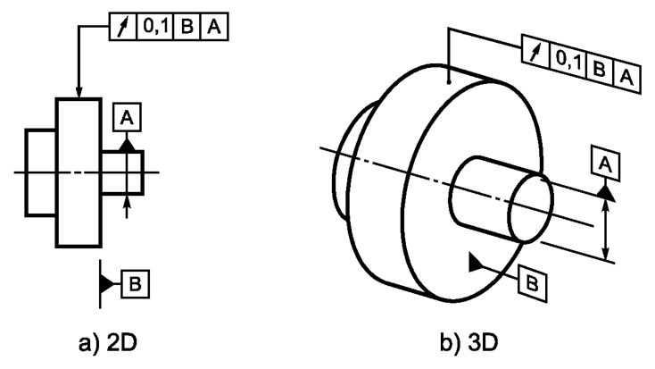
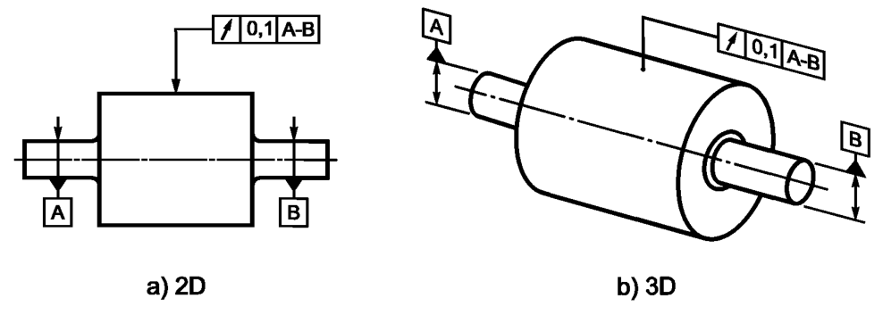
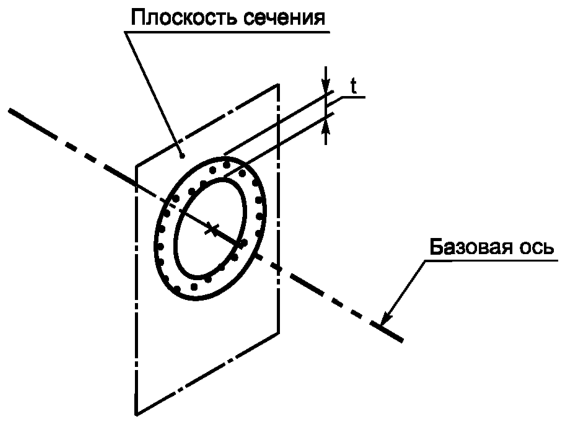
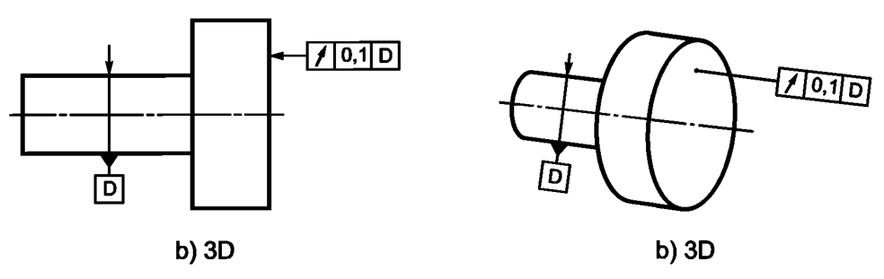
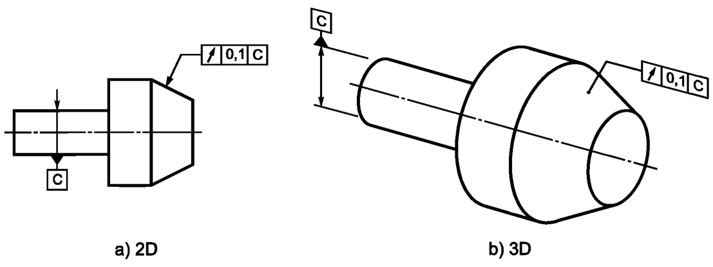
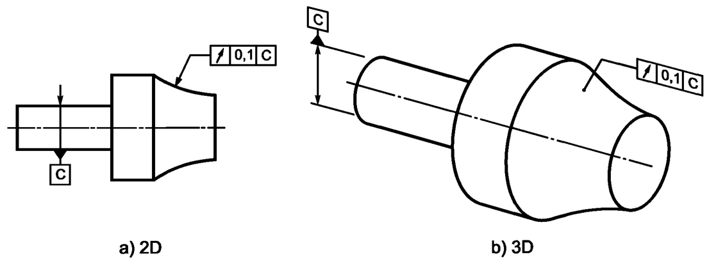
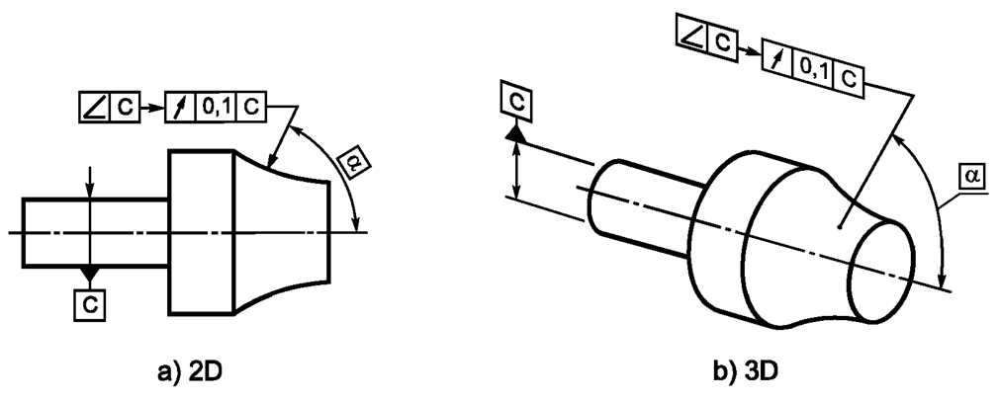
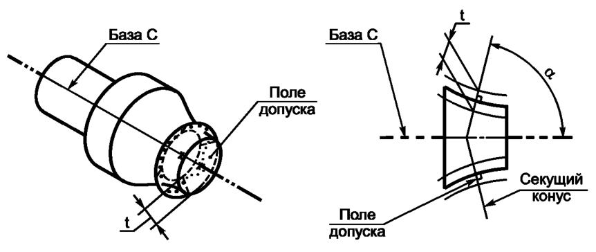

Выявленная линия в любой плоскости поперечного сечения, перпендикулярной базовой оси А, должна располагаться между двумя лежащими в этой же плоскости концентрическими окружностями, разность радиусов которых равна 0,1, а их общий центр лежит на базовой оси А, см. рисунок ниже
Выявленная линия в любой плоскости поперечного сечения, параллельной базовой плоскости В, должна располагаться между двумя лежащими в этой же плоскости сечения концентрическими окружностями, разность радиусов которых равна 0,1, а их общий центр лежит на базовой оси А, являющейся вторичной базой, см. рисунок ниже
Выявленная линия в любой плоскости поперечного сечения, перпендикулярной общей базовой оси A-В, должна быть расположена между двумя лежащими в этой же плоскости концентрическими окружностями, разность радиусов которых равна 0,1, а их общий центр лежит на базовой оси А-В, см. рисунок ниже
Поле допуска в любом перпендикулярном базовой оси поперечном сечении ограничено двумя концентрическими окружностями, разность радиусов которых равна значению допуска t, а их общий центр совпадает с базой, см. рисунок ниже

Выявленная линия в любой плоскости поперечного сечения, перпендикулярной базовой оси А, должна быть расположена между двумя лежащими в этой плоскости концентрическими окружностями, разность радиусов которых равна 0,2, а их общий центр совпадает с базовой осью А
Допуск радиального биения обычно устанавливают для всего элемента, но он также может быть задан и на нормируемом участке элемента, см. рисунки ниже
Выявленная линия на боковой поверхности любого пересекающего нормируемую поверхность цилиндра, коаксиального с базовой осью D, должна быть расположена между двумя окружностями на этом цилиндре, находящимися на расстоянии 0,1 друг от друга, см. рисунок ниже
Поле допуска в любом сечении торцовой поверхности представляет собой участок боковой поверхности соответствующего коаксиального с базовой осью секущего цилиндра, ограниченный двумя окружностями на цилиндре, расстояние между которыми равно значению допуска t, см. рисунок ниже

Выявленная линия на боковой поверхности любого пересекающего нормируемую поверхность коаксиального с базовой осью С конуса, образующая которого перпендикулярна поверхности номинального нормируемого элемента детали, должна быть расположена между двумя окружностями на этом конусе, находящимися на расстоянии 0,1 (вдоль образующей конуса) друг от друга, см. рисунок ниже
Если образующая нормируемого элемента не является номинально прямой линией, то угол при вершине секущего конуса зависит от текущего положения этого конуса, см. рисунок ниже
Выявленная линия на боковой поверхности любого пересекающего нормируемую поверхность коаксиального с базовой осью С конуса, половина угла при вершине которого равна а, должна быть расположена между двумя окружностями на этом конусе, находящимися на расстоянии 0,1 (вдоль образующей конуса) друг от друга, см. рисунок ниже
Поле допуска в любом сечении нормируемой поверхности представляет собой участок боковой поверхности соответствующего коаксиального с базовой осью секущего конуса, половина угла при вершине которого равна теоретически точному угловому размеру а, ограниченный двумя окружностями на конусе, расстояние между которыми (вдоль образующей конуса) равно значению допуска t, см. рисунок ниже
